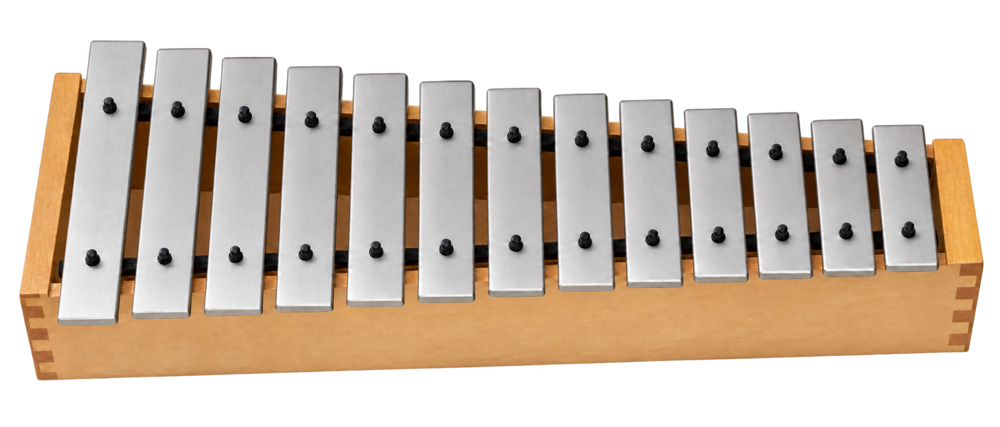

Skip to workspace
Mallet
&
Measure
The Orff Ensemble Studio
By Drew Wichman
Play
Compose
Rehearse
Mixer
Project
⌄
Export
↗
?
Collection
Instrument
Sequencer
Song Builder
Score
Ensemble
My Part
Play a key
MIDI settings
MALLET & MEASURE
THE ORFF ENSEMBLE STUDIO
Mallet
&
Measure
.
Play. Compose.
Bring music to life.
Enter the studio
↗
Skip this screen next time
Created by
Drew Wichman
WOOD · METAL · RESONANCE

A place for every part.
A sound of your own.